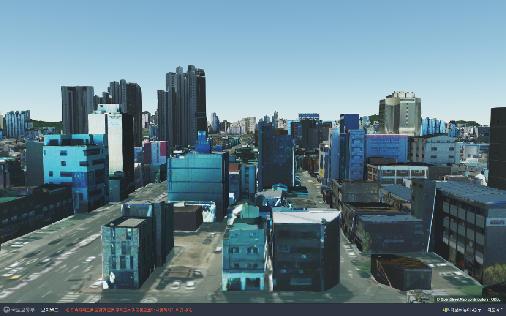
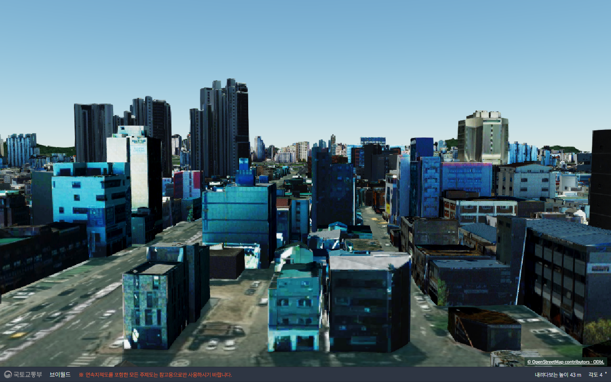
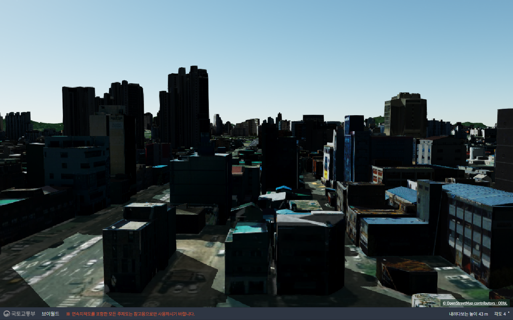
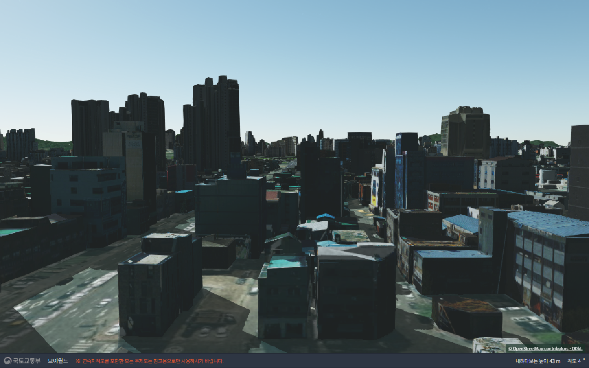
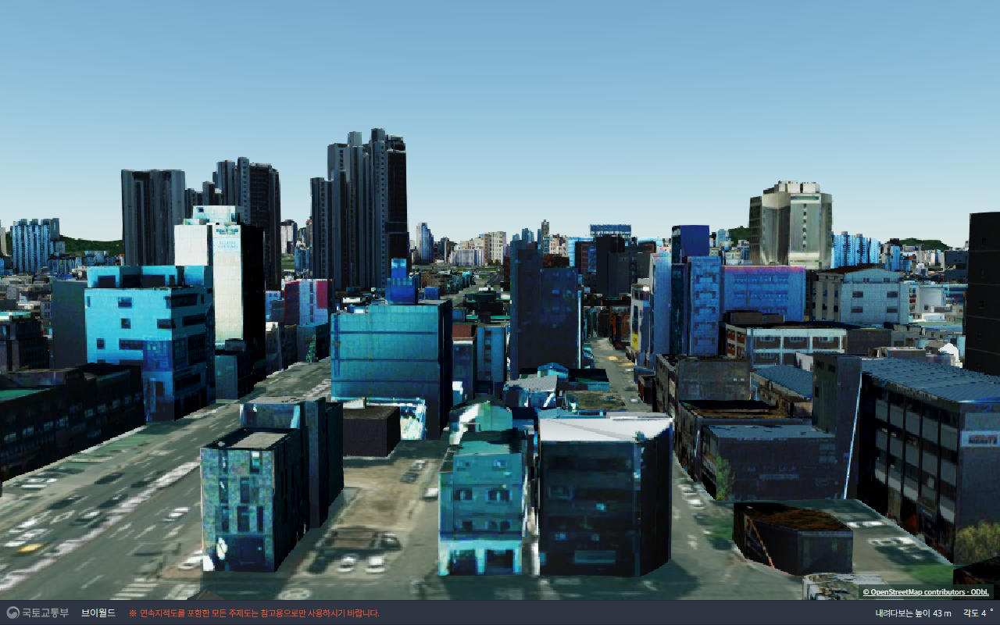
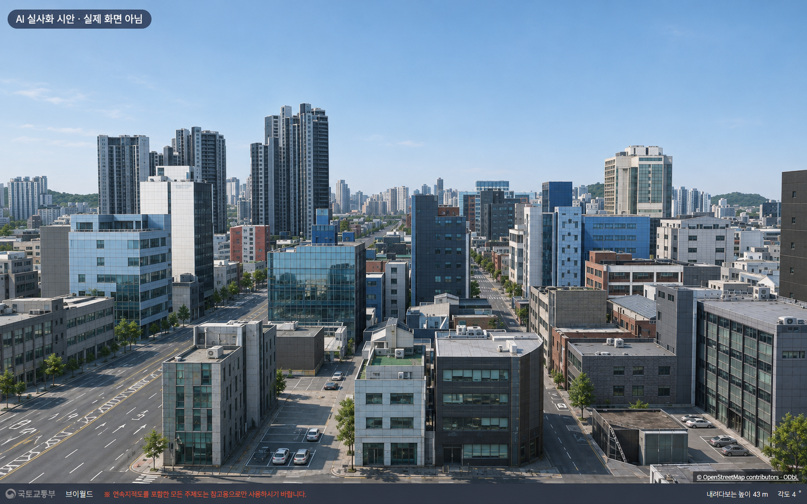

2호선 성수 → 건대입구 선로 중간 · 오른쪽 창가 · 지형 위 30m 시험 시점. 원본과 GPU 효과는 같은 카메라로 캡처했습니다. 클릭하면 크게 볼 수 있습니다.
01~09는 실제 SDK 시험 캡처, 10은 AI 생성 정지 시안입니다. AI 영상의 이동 일관성은 시험하지 않았습니다. 실사처럼 보이는 것과 실제 지형을 정확히 재현하는 것은 다릅니다.
결과: 색감·AO만으로 흐린 건물 외벽이 복원되지는 않았습니다. 조명은 일부 건물을 더 어둡게 만들었습니다. AI 시안의 변화는 크지만 원본에서 건축 세부가 재해석되었습니다. 새 PBR 외벽 재질·고해상도 텍스처 교체와 Unreal/Lumen은 이번 웹 SDK에서 완료한 기능이 아닙니다.
현재 브이월드 기본 화면. 비교 기준.

채도·선명도·거리 안개 보정.

이 장면에서는 시각적 변화가 작음.
추가 조명에서 외벽이 과하게 어두워짐.

접점 음영과 태양광·그림자 조합.

후처리를 합쳐도 흐린 외벽은 복원되지 않음.
SDK에 맞춰 수정 후 렌더 성공. 원본 외벽 사진은 유지되어 차이가 거의 없음.

설정은 연결됐지만 눈에 띄는 창문 반사 개선은 거의 없음.
조명을 포함해 건물이 어두워짐. 고해상도 외벽 교체 아님.

AI가 건축 세부를 재해석한 이미지. 실제 앱·실제 현장 재현이 아님.